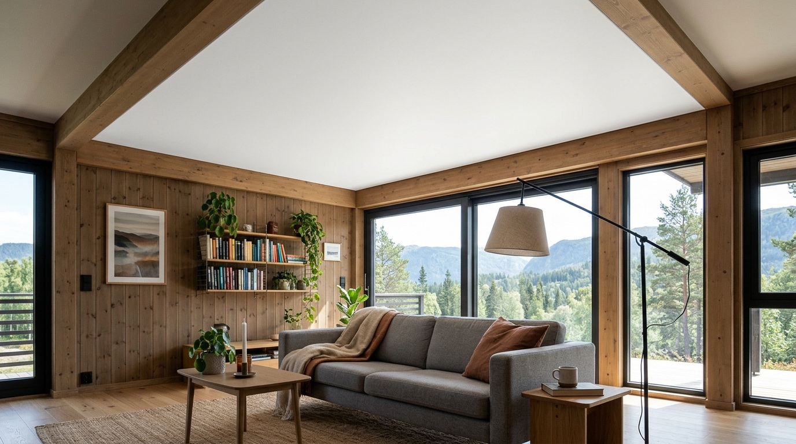

KONSEPTILLUSTRASJON
Blanke strekktak
For deg som liker lys og refleksjoner.
Akershus og Oslo
Ingen riving, ingen sparkling. Vi kommer om morgenen, og om kvelden har du et nytt, glatt tak.
Slik fungerer det
Et strekktak er en duk som spennes i profiler langs kanten av rommet. Duken danner en jevn flate under det eksisterende taket.
Vi fester aluminiumsprofiler langs veggene, varmer opp duken og strammer den inn i profilene. Taket senkes vanligvis 3–5 cm, litt mer hvis det skal inn spotter. Det er ingen sliping, sparkling eller maling. Flytt gjerne møblene litt ut fra veggene før vi kommer.
Velg matt hvis taket skal se ut som et nymalt tak. Blank speiler rommet og får et lavt rom til å virke høyere, men viser skjøter tydeligere. I brede rom kan duken trenge en skjøt, og vi viser deg hvor den havner. Rengjør med en fuktig, myk klut uten skuremiddel. Trenger du brannklassifisert tak, for eksempel på kontor? Da monterer vi tekstilduken DESCOR fra tyske Pongs, brannklasse B-s1,d0 (vanskelig antennelig). Prisen får du etter befaring.
Velg LED: halogenspotter blir for varme for duken. Det elektriske arbeidet utføres av en registrert elektroinstallatør, og du får samsvarserklæring. Bestem plassering av lamper og røykvarslere før montering. Å flytte dem senere krever nye hull i duken.
Slå av strømmen til taklampene, og ikke stikk hull i duken selv. Ta bilder til forsikringsselskapet og ring oss. Vi tapper vannet ut gjennom et lyspunkt. Når duken har tørket, strammer den seg vanligvis tilbake, og taket må ikke byttes.
Nei. Fukt og mugg under duken blir skjult, ikke borte. Se etter misfarging, mugglukt eller flassende maling i taket. Fiks årsaken først og la taket tørke. På bad passer strekktak godt fordi PVC tåler fukt, men avtrekksviften må fungere.
Mange norske hus har panel- eller platetak. Duken monteres under det gamle taket, så du slipper riving og avfall. Rør og ledninger kan skjules hvis vi senker taket litt mer. Har du hytte uten varme om vinteren? Si fra: PVC tåler frost dårlig, så vi vurderer rommet først.
LYS OG OVERFLATER
Matt sprer lyset mykt og gir en rolig flate.

VÅRE LØSNINGER
Et tak trenger ikke å være bare hvitt og flatt. Det kan være diskret, speilblankt eller en del av belysningen. Finn uttrykket du liker.
Gratis befaringFor deg som liker lys og refleksjoner.
En myk, jevn flate som lar resten av rommet skinne.
Midt mellom matt og blankt. Mykt lys, akkurat passe glød.
Lyslinjer bygget inn i taket, så lyset blir en del av rommet.
Et diskret lys langs kanten. Stemning uten synlige lamper.
Lys akkurat der du trenger det. Planlagt sammen med taket.
Bildene viser eksempler på design, ikke ferdige prosjekter fra taknova.
FRA IDÉ TIL FERDIG TAK
Vi kommer hjem til deg, ser på rommet og hører på ideene dine, også dem du ikke har bestemt deg for ennå.
Matt eller blankt, med eller uten lys? Vi finner løsningen sammen. Du får et skriftlig tilbud, og prisen står fast så lenge forholdene ikke endrer seg.
Vi skriver under en enkel avtale og setter en dato. Et vanlig rom monteres på én dag, og vi rydder etter oss.
Ved bestilling betaler du 30 % av prisen. Duken skjæres på mål til ditt rom. Resten betaler du etter montering, med faktura eller Vipps.
OM TAKNOVA
Vi har over 5 års erfaring med strekktak og monterer i hele Akershus og Oslo. På befaringen tar vi mål og går gjennom hvilke overflater som passer til rommet ditt. Du får et pristilbud før du bestemmer deg.
Vi monterer i hele Oslo og Akershus. Les om befaring og montering der du bor.
KONTAKT
Fortell oss hvilket rom det gjelder. Vi tar kontakt for å avtale befaring i Oslo eller Akershus. Etter befaringen får du et skriftlig tilbud med fast pris.
Vi svarer innen 24 timer. Vi tar imot henvendelser kl. 08–19.